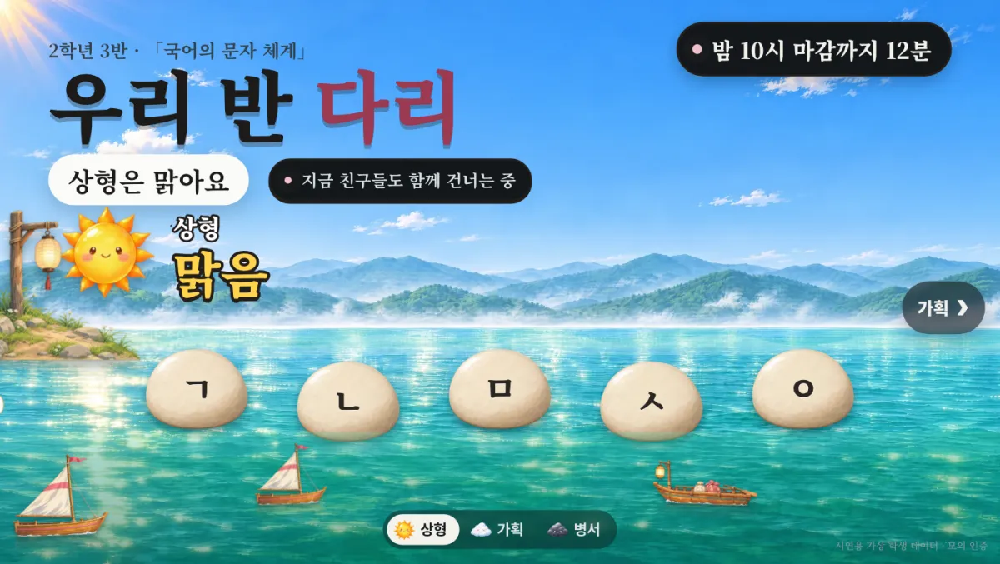

얼굴 인식은 학생이 아니라 교사 본인 확인에만 사용했습니다
EU AI법은 교육기관에서 감정을 추론하는 AI를 금지하고, 학생에게 얼굴 인식은 감시로 읽힙니다.그래서 얼굴은 학생 정보를 여는 교사 본인 확인에만 사용하고, 비밀번호로도 같은 효력을 갖게 했습니다.사범대 쪽이 함께 원했던 교사 얼굴 인증 접근은 그대로 살렸습니다.
전후 학생 영상 시청 확인 → 학생 정보를 열 때 교사 재인증 (얼굴 또는 비밀번호)
Project · AI 교사 지원
플립러닝 수업 전에 학생이 막힌 개념을 찾아, 반 전체가 같은 출발선에서 수업을 시작하게 돕는 AI 교사 지원 서비스입니다.
2026 INHA AX-EDU HACKATHON 우수상 (인하대학교 사범대학장상)

해커톤에서 시연한 서비스가 지금도 그대로 열려 있습니다. 카드를 누르면 새 탭에서 열립니다.
/teacher오늘의 수업 예보
여기서 해 볼 것막힌 개념 TOP 3를 보고, 8유형 공간을 돌려 본 뒤, 징검돌 문제 만들기로 AI 문제 초안을 받아 보세요.
교사 화면 열기
/student징검런
여기서 해 볼 것개념 보기, 글자 만들기 실험, 문제 풀이로 남은 징검돌을 하나 굳혀 보세요.
학생 화면 열기
/class우리 반 다리
여기서 해 볼 것반 전체가 굳힌 돌로 이어진 다리와, 구간마다 날씨로만 보여 주는 진행 상태를 확인해 보세요.
교실 화면 열기학생 30명은 모두 시연용 가상 데이터이고, 얼굴 인증은 모의 동작이라 얼굴 정보를 받거나 저장하지 않습니다. 시연 단축키: 1 2 3 학생, 교실, 교사 화면 전환, N 다음 단계, T 수업 시작, Shift+R 처음부터.
Problem
Planning
예비교사와 예비개발자가 한 팀이 되는 해커톤이었습니다.
사범대 예비교사 팀원 두 명이 주제와 자료를 넘겨주면, 저와 동기가 이해하고 서비스로 만드는 구조였습니다.처음 받은 요청은 이랬습니다.
얼굴 인식으로 학생이 수업 영상을 실제로 보는지 기록하고, 의욕, 능력, 학습 환경으로 학생을 8유형으로 나눠 주세요. 처음 받은 요청
저희 둘은 교육 도메인 지식이 없었습니다.플립러닝이나 선수 개념 같은 말부터 처음에는 이해가 안 되는 부분이 많았습니다.
“절대 빠지면 안 되는 한 가지는 무엇인가요?”부터 물었습니다.답은 ‘학생의 학습 과정 분석’이었고, 얼굴 인식은 보조 기능이어도 된다고 했습니다.
저희도 교육을 받아 온 사람이라는 데서 시작했습니다.팀원들이 플립러닝, 태블릿 지급, 고교학점제처럼 예전과 달라진 점을 쉽게 설명해 줬습니다.
들은 내용을 개발 용어 대신 사용자 시나리오와 화면으로 정리해 보여 줬습니다.교육 전문가와 슈퍼스쿨 기획팀, 개발팀에게도 방향을 확인받았습니다.
Decisions
사용자가 미성년자라서, 같은 기능도 학생에게 어떻게 읽힐지를 먼저 봤습니다.
EU AI법은 교육기관에서 감정을 추론하는 AI를 금지하고, 학생에게 얼굴 인식은 감시로 읽힙니다.그래서 얼굴은 학생 정보를 여는 교사 본인 확인에만 사용하고, 비밀번호로도 같은 효력을 갖게 했습니다.사범대 쪽이 함께 원했던 교사 얼굴 인증 접근은 그대로 살렸습니다.
‘의욕이 낮다’는 판단은 미성년자에게 꼬리표가 됩니다.참여 신호는 영상 미시작, 확인 질문 무응답, 말해보기 미제출처럼 관찰된 사건으로만 보게 했습니다.집에 기기가 없는 학생은 환경 문제부터 풀게 했습니다.
처음 구상은 헷갈린 부분을 한 줄로 쓰게 하는 것이었습니다. 예비교사 팀원은 “쓰라고 하면 안 쓸 것 같다”고 답했습니다.대신 배운 개념을 자기 말로 설명하게 하고, AI가 그 답에서 막힌 개념을 찾게 했습니다.
“유형까지는 AI가 제시하고, 교사는 판단하는 역할이면 좋겠다”는 팀원 의견을 그대로 구조로 옮겼습니다.모든 AI 결과에 “교사 본인이 직접 확인하시길 바랍니다”를 띄웠습니다.화면에는 학생 순위가 없고, 기록은 성적에 반영되지 않습니다.
Build
시연 단원은 중학교 2학년 국어 「국어의 문자 체계」 (훈민정음 제자 원리)입니다.
AI가 학생 30명의 말해보기 답을 읽고 막힌 개념 TOP 3와 구간별 상태를 수업 전에 보여 줍니다.
세 축으로 학생 위치를 3D로 보여 주고, 학생별 근거와 지도 방향, 문항 유형 비율을 제안합니다.
성취기준과 차시를 고르면 AI가 문제 초안을 만들고, 교사가 검토한 것만 학생에게 갑니다.
선생님이 승인한 만큼의 징검돌을 개념 보기, 글자 만들기, 문제 풀이로 놓고, 도착 관문에서 자기 말로 설명합니다.
굳힌 돌이 반 전체의 다리가 되고, 비어 있는 구간은 수업 첫 8분에 함께 메웁니다.
학생이 드러나는 정보는 교사 재인증 뒤에만 열리고, 외부 AI에는 가명 처리한 답만 보냅니다.
AI 호출과 분석 API는 백엔드를 맡은 동기가 만들었습니다. 한글 실험실은 팀원이 만든 저작물을 사용 동의를 받아 사용했습니다.
Result
가상 학생 답 30개에 예비교사가 단 오개념 라벨을 정답으로 두고 비교했습니다.
읽는 법 29/30은 시연용 가상 답 30개에서 나온 값입니다. 실제 학생 답에서의 정확도는 파일럿에서 다시 재야 하는 숫자입니다.
Team · Stack
주제와 수업 자료, 요즘 교실에 대한 설명, 오개념 판단 라벨
백엔드, AI 호출과 분석 API
서비스 기획, 프론트엔드 (8유형 공간, 징검런, 우리 반 다리), 라이브 시연
Next.js, TypeScript, Tailwind CSS, Vercel
Claude API (안뇽GPT BAZE API Gateway 경유)
Next
지식이 부족한 쪽이 있는 협업에서 중요한 건 서로의 말을 번역하는 일이었습니다.팀원들은 요즘 교실을 쉽게 설명해 줬고, 저는 그걸 화면과 흐름으로 바꿔 다시 확인받았습니다.서로 이해하고 공감하는 시간을 먼저 가졌기 때문에 짧은 시간에도 원하는 서비스를 끝까지 만들 수 있었습니다.
이 경험으로 교육과 AI를 묶은 서비스를 기획하고 개발해 사업화까지 해 볼 계획입니다.
More projects